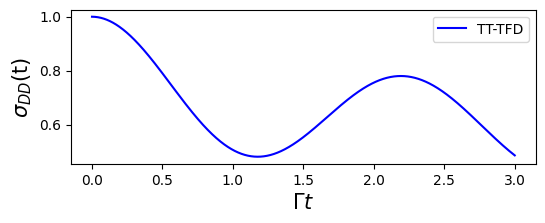

In this section, we introduce the tensor-train thermo-field dynamics (TT-TFD) method. Using the spin-boson model as an example, we demonstrate how TT-TFD can be used to simulate its quantum dynamics and compute the corresponding memory kernel.
The TT-TFD method has been fully integrated into the qflux.GQME module.
What is TT-TFD?
The thermo-field dynamics (TFD) method enables the simulation of thermal quantum systems by doubling the Hilbert space and purifying the thermal density matrix into a pure state. It transform solving the Liouville equation \(\frac{d}{dt} \hat{\rho}(t) = -\frac{i}{\hbar} [\hat{H}, \hat{\rho}(t)]\) into solving
with \(\bar{H} = \hat{H}\otimes \tilde{I}\). And \(|\psi(\beta, t)\rangle\) is the thermal wave function from which the density operator \(\hat{\rho}(t)\) can be obtained as follows:
Next, we consider the spin-boson model as an example and provide the explicit form of the effective Hamiltonian \(\bar{H}\) and initial state |\(\psi(\beta, 0)\rangle\) used in the thermo-field dynamics framework.
The spin-boson model
The spin-boson model is a convenient and widely used framework for simulating electronic energy and charge transfer dynamics in chemical systems. This model comprises two electronic states, representing a diabatic donor state \(\lvert D \rangle\) and an acceptor state \(\lvert A \rangle\), coupled to a harmonic bath that interacts with the electronic degrees of freedom.
The total Hamiltonian can be written as:
where \(\hat{\sigma}_z = |D\rangle\langle D| - |A\rangle\langle A|\) and \(\hat{\sigma}_x = |D\rangle \langle A| + |A\rangle\langle D|\) are the Pauli matrices for the electronic DOF (with \(D\) standing for Donor and \(A\) for acceptor), \(2\epsilon\) is the energy gap between the electronic states, \(\Gamma\) is the coupling between them, and \(\hat R_i\) and \(\hat P_i\) are the mass-weighted position and momentum operators of the \(i\)-th nuclear DOF.
The general discretized form of the nuclear modes frequencies and coupling coefficients, \(\{\omega_{k} , c_{k}\}\), is given by
We sample the \(\{\omega_{k} , c_{k}\}\) from an Ohmic spectral density with exponential cutoff:
Here, \(\xi\) is the Kondo parameter and \(\omega_{c}\) is the cutoff frequency.
The initial state is assumed to be of the form
with \(\hat{\sigma} (0) = |\gamma\rangle \langle \gamma |\) is the initial electronic density operator, where \(|\gamma\rangle\) is one of the electronic basis states. The initial nuclear density operator given by
We set the parameters as:
GAMMA_DA = 1 # diabatic coupling
EPSILON = 1
BETA = 5 # inverse finite temperature beta = 1 / (k_B * T)
XI = 0.1
OMEGA_C = 2
which are defined in qflux.GQME.params.
TT-TFD for spin-boson model
The TT-TFD method evolves the spin-boson model in an extended Hilbert space, which is defined as the tensor product of the electronic subsystem, the physical nuclear degrees of freedom, and their thermal-field replicas:
Here:
- \(\mathcal{H}_e\): Hilbert space of the two-level electronic system (donor/acceptor),
- \(\mathcal{H}_n\): Hilbert space of the nuclear (bath) degrees of freedom,
- \(\tilde{\mathcal{H}}_n\): a fictitious copy of \(\mathcal{H}_n\) introduced via the TFD formalism.
The initial thermal wave function
where \(\hat{H}_{n} = \sum_{i = 1}^{N_{n}} \frac{\hat{P}_{i}^{2}}{2} + \frac{1}{2} \omega_{i}^{2} \hat{R}_{i}^{2}\) is the nuclear bath, and \(|k\rangle\) is the bath state.
The preparation of the initial thermal wavepacket requires the evaluation of the quantum Boltzmann operator, which can be computationally challenging for systems with high dimensionality. However, when the initial nuclear Hamiltonian is harmonic, the initial thermal wavepacket can be obtained by taking advantage of the thermal Bogoliubov transformation. The transformation is defined by \(e^{-i\hat{G}}\) with
with \(\theta_{j} = {\rm arctanh}(e^{-\beta \omega_{j} / 2})\), where \(\{ \hat{a}_{j}, \hat{a}_{j}^{\dagger} \}\) and \(\{ \tilde{a}_j, \tilde{a}_j^\dagger \}\) are the creation and annihilation operators associated with the \(j\)-th nuclear degree of freedom in the physical and tilde Hilbert spaces, respectively.
After the transformation, the TT-TFD equation becomes
with
and the initial thermal wave function becomes
In practice, the \(N_n\) pairs of \(\{\omega_i , c_i\}\) are sampled from an Ohmic spectral density, and the TFD equations are solved in the tensor-train (TT) representation (more details can refer to "Tensor-Train Thermo-Field Memory Kernels for Generalized Quantum Master Equations").
TT-TFD Implementation in qflux
The TT-TFD approach has been integrated into the qflux package.
The time-dependent
variational principle (TDVP) method is employed to propagate the TT-TFD. With the
help of the mpsqd package developed by Guan et al., tensor-train (TT) operations can be conveniently performed.
import qflux.GQME.tt_tfd as tfd
#RDO: reduced density operator, contain the information of population and coherence
#initial_state=0: initial at Donor state
t, RDO_arr = tfd.tt_tfd(initial_state=0, show_steptime=True, update_type='rk4')
The result of the TT‑TFD simulation is shown in the figure below. Where we plot the donor-state population \(|D\rangle\) over time in the spin‑boson model.
plt.figure(figsize=(6,2))
plt.plot(t, RDO_arr[:,0].real,'b-', label='TT-TFD')
plt.xlabel('$\Gamma t$',fontsize=15)
plt.ylabel('$\sigma_{DD}$(t)',fontsize=15)
plt.legend()

Summary
In this documentation, we introduce the tensor-train thermo-field dynamics (TT-TFD) method, a numerically exact approach for solving open quantum system dynamics:
-
The definition of the spin-boson model is presented.
-
The TT-TFD formulation for the spin-boson model is detailed, including discretization of the environment and the use of the thermal Bogoliubov transformation.
-
The specific implementation of TT-TFD using
qfluxis described.
The TT-TFD approach provides an accurate and efficient framework for studying strongly coupled system–bath dynamics, and its integration in qflux offers a practical tool for real applications.